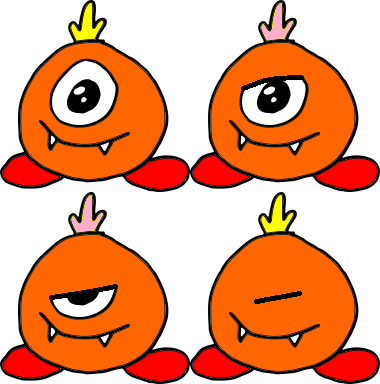

The main difference between the Sprite and Image classes is that sprites are intended to be animated and interactive, while images are not. In the example below, we have made three changes (shown in blue) to our previous program. First, we have replaced the text message “Hello, world!” by a numerical value that we will eventually use to keep score. Second, we have used a different image file to create the alien sprite. Finally, we have added an extra keyword when configuring the alien sprite.
from sc8pr import Sketch, Image, TOPLEFT, VERTICAL, HORIZONTAL
from sc8pr.sprite import Sprite
from sc8pr.text import Text
def setup(sk):
sk.bg = Image("sky.png") # Set background
score = Text(0) # Set the game score to 0
score.config( # Configure the score object
pos = (8, 8),
anchor = TOPLEFT,
color = "red",
fontSize = 32)
alien = Sprite("aliens.png", 2, 2) # Create a sprite
alien.config( # Configure the alien
pos = sk.center,
width = sk.width/10,
costumeTime = 10)
sk += score, alien # Add the graphics objects
Sketch((512,362)).play() # Create and run the sketch
Let’s focus on the line where the sprite is created...
alien = Sprite("aliens.png", 2, 2) # 2 by 2 spritesheet
The file being loaded here is a spritesheet. Here is what the contents of the file look like...

There are four different “costumes”† arranged into two columns by two rows. When loading the spritesheet, we have passed the number of columns and rows as the second and third arguments after the file name. These costumes allow us to create the appearance that the alien’s eye is blinking and its crest is changing color. When we call the alien sprite’s config method, we have added a keyword argument, costumeTime = 10, to indicate that we want the costume to change every ten animation frames. The default animation rate is 60 frames per second, so this would correspond to changing costume six times per second.
If you have the costumes saved as separate files rather than as a single spritesheet, you can load the images individually and then pass the sequence of images to the Sprite function...
costumes = [Image("alien0.png"), Image("alien1.png"),
Image("alien2.png"), Image("alien3.png")]
alien = Sprite(costumes)
If you run the program, you may notice that the alien’s eye closes gradually but pops open suddenly. This happens because the animation cycles back to costume 0 after costume 3 is done. To make the eye open gradually, we can alter the costume sequence...
seq = 0, 1, 2, 3, 2, 1 alien.costumeSequence(seq)
If we want to spend more time on costumes 0 and 3 before switching to the other costumes, we can repeat these costumes in the sequence...
seq = 0, 0, 0, 1, 2, 3, 3, 3, 2, 1 alien.costumeSequence(seq)
†The term costume is from Scratch.